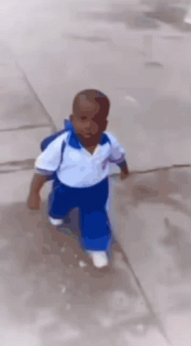
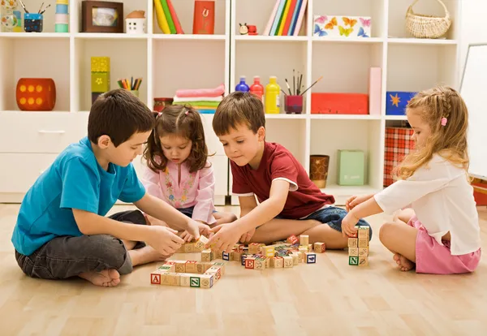
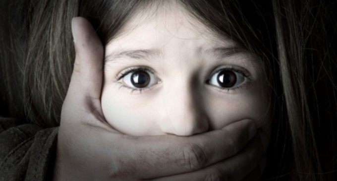
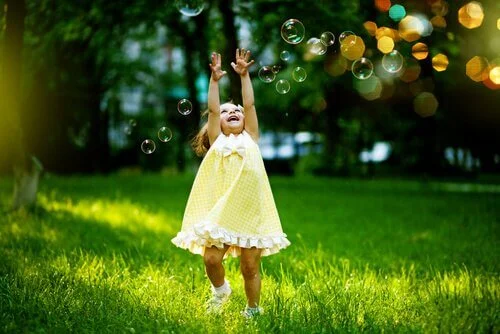
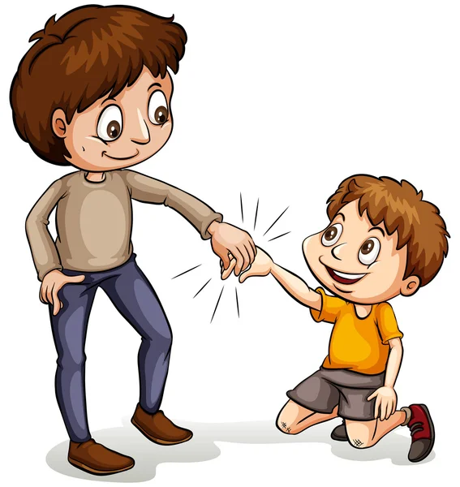

Art. 2º
considera-se criança, para os efeitos desta Lei, a pessoa até doze anos de idade incompletos, e adolescente aquela entre doze e dezoito anos de idade.

Art. 3º
A criança e o adolescente gozam de todos os direitos fundamentais inerentes à pessoa humana, sem prejuízo da proteção integral de que trata esta Lei, assegurando-se-lhes, por lei ou por outros meios, todas as oportunidades e facilidades, a fim de lhes facultar o desenvolvimento físico, mental, moral, espiritual e social, em condições de liberdade e de dignidade.

Art. 5º
Nenhuma criança ou adolescente será objeto de qualquer forma de negligência, discriminação, exploração, violência, crueldade e opressão, punido na forma da lei qualquer atentado, por ação ou omissão, aos seus direitos fundamentais.

Art. 7º
A criança e o adolescente têm direito a proteção à vida e à saúde, mediante a efetivaçã de políticas sociais públicas que permitam o nascimento e o desenvolvimento sadio e harmonioso, em condições dignas de existência.
Art. 13.
Em casos de suspeita ou confirmação de castigo físico, de tratamento cruel ou degradante e de maus-tratos contra criança ou adolescente serão obrigatoriamente comunicados ao Conselho Tutelar da respectiva localidade, sem prejuízo de outras providências legais.
Art. 15.
A criança e o adolescente têm direito à liberdade, ao respeito e à dignidade como pessoas humanas em processo de desenvolvimento e como sujeitos de direitos civis, humanos e sociais garantidos na Constituição e nas leis.

Art. 16
O direito à liberdade compreende os seguintes aspectos:
I - ir, vir e estar nos logradouros públicos e espaços comunitários, ressalvadas as restrições legais;
II - opinião e expressão;III - crença e culto religioso;IV - brincar, praticar esportes e divertir-se;
V - participar da vida familiar e comunitária, sem discriminação;
VI - participar da vida política, na forma da lei;
VII - buscar refúgio, auxílio e orientação.
Art. 17.
O direito ao respeito consiste na inviolabilidade da integridade física, psíquica e moral da criança e do adolescente, abrangendo a preservação da imagem, da identidade, da autonomia, dos valores, idéias e crenças, dos espaços e objetos pessoais.
Art. 18-A.
A criança e o adolescente têm o direito de ser educados e cuidados sem o uso de castigo físico ou de tratamento cruel ou degradante, como formas de correção, disciplina, educação ou qualquer outro pretexto, pelos pais, pelos integrantes da família ampliada, pelos responsáveis, pelos agentes públicos executores de medidas socioeducativas ou por qualquer pessoa encarregada de cuidar deles, tratá-los, educá-los ou protegê-los.

Art. 70.
É dever de todos prevenir a ocorrência de ameaça ou violação dos direitos da criança e do adolescente.
